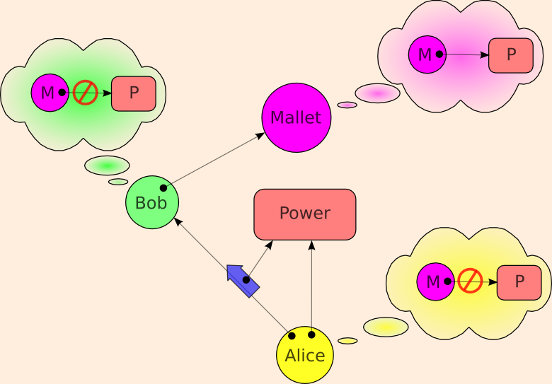

| |
The
Confused |
||||||
(See Prohibiting Delegation for context)

Bob has the Power, and Bob and Mallet are properly communicating. Bob wishes to hold the power and use it properly. However, he wishes to deny the power to Mallet, and Alice trusts him to do so successfully. Alice considers Bob her deputy in the use of this Power. Can Mallet confuse him into providing the power to Mallet?
See the original paper. Netscape calls this problem a "Luring Attack".
Norm's confusable compilation deputy in a hypothetical E-like language based on ambient authority instead of capabilities:
to compile(srcName, dstName) {
myAmbientAuthority += principal().getAuthority()
src := open(srcName, "r")
dst := open(dstName, "w")
acct := open(myAccountingFile, "w")
reallyCompile(src, dst, acct)
}
By contrast, this Compilation Deputy is too stupid to be confused:
to compile(src, dst) {
reallyCompile(src, dst, acct.reopen())
}
The main punch line of the tale of the Confused Deputy is "Don't separate designation from authority." A Capability is a pure opaque designator that coveys authority. An implication is that all names are local.
The next punch line is "Don't separate authorization from invocation". Even in systems where designation and authority have been kept together, if authorization is separated from invocation, deputies will still be confused. SPKI is an interesting case to examine, as it is a very capability-like (and capability-inspired) system that nevertheless makes both of the above mistakes.
Kragen Sitaker has gathered together an explanation of three classic Confused Deputy problems the Web is vulnerable to: The Scooter problem, the ClientSideTrojan issue, and the cross-site scripting problem. Separately, Dean Tribble points out that HTML itself is inherently vulnerable to Confused Deputy problems
Unless stated otherwise, all text on this page which is either unattributed or by Mark S. Miller is hereby placed in the public domain.
| |
|
report bug (including invalid html)
|
||||||||